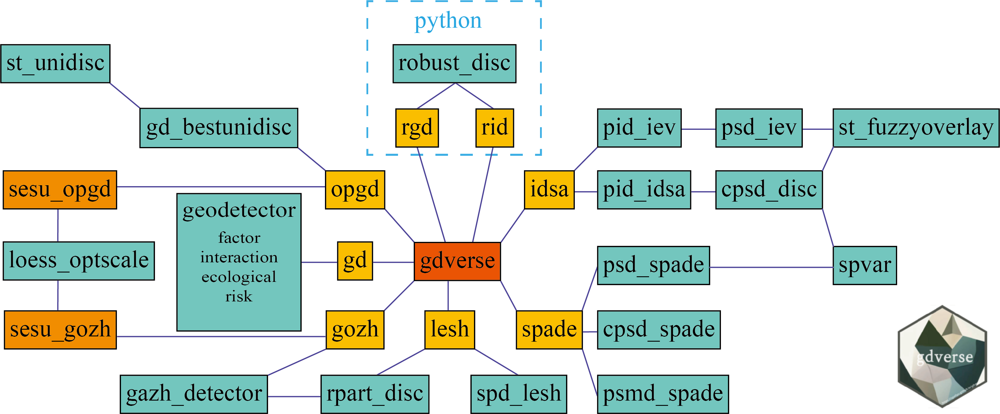

The goal of gdverse is to support the geodetector model and its variants.
Overview
Full document of the most recent release of gdverse is online: https://spatlyu.github.io/gdverse/

Functions in gdverse
Current models and functions provided by gdverse are:
| geodetector model | gdverse function | support status |
|---|---|---|
| GD | gd() |
✔️ |
| OPGD | opgd() |
✔️ |
| GOZH | gozh() |
✔️ |
| LESH | lesh() |
✔️ |
| SPADE | spade() |
✔️ |
| IDSA | idsa() |
✔️ |
| RGD | rgd() |
✔️ |
| RID | rid() |
✔️ |
Installation
You can install the development version of gdverse from github with:
# install.packages("devtools")
devtools::install_github("SpatLyu/gdverse",
build_vignettes = TRUE,
dep = TRUE)You can also install the binary version of gdverse from r-universe:
install.packages("gdverse",
repos = c("https://spatlyu.r-universe.dev",
"https://cran.rstudio.com/"),
dep = TRUE)Example
library(terra)
library(tidyverse)
library(gdverse)
fvcpath = "https://github.com/SpatLyu/rdevdata/raw/main/FVC.tif"
fvc = terra::rast(paste0("/vsicurl/",fvcpath))
fvc = terra::aggregate(fvc,fact = 5)
fvc = as_tibble(terra::as.data.frame(fvc,na.rm = T))
head(fvc)
## # A tibble: 6 × 13
## fvc premax premin presum tmpmax tmpmin tmpavg pop ntl lulc elev slope
## <dbl> <dbl> <dbl> <dbl> <dbl> <dbl> <dbl> <dbl> <dbl> <dbl> <dbl> <dbl>
## 1 0.188 163. 6.86 3992. 21.2 -7.09 8.54 5.64 9.10 10 1645. 2.96
## 2 0.162 162. 5.23 3922. 21.7 -6.90 8.92 23.1 10.5 10 1539. 1.86
## 3 0.168 168. 4.15 4040. 21.2 -7.22 8.53 9.73 5.58 10 1611. 3.19
## 4 0.186 174. 5.99 4254. 20.8 -7.42 8.21 6.84 2.89 10 1677. 3.32
## 5 0.189 164. 7.86 4047. 21.2 -7.00 8.58 2.36 12.3 10 1643. 2.79
## 6 0.171 161. 5.23 3944. 21.7 -6.85 8.91 3.17 10.1 10 1553. 1.93
## # ℹ 1 more variable: aspect <dbl>OPGD model
tictoc::tic()
fvc_opgd = opgd(fvc ~ ., data = fvc,
discvar = names(select(fvc,-c(fvc,lulc))),
cores = 6, type = 'factor')
tictoc::toc()
## 4.22 sec elapsed
fvc_opgd
## OPGD Model
## *** Factor Detector
##
## | variable | Q-statistic | P-value |
## |:--------:|:-----------:|:------------:|
## | presum | 0.66923550 | 8.550000e-10 |
## | lulc | 0.65972601 | 8.780000e-10 |
## | premin | 0.47166574 | 7.960000e-10 |
## | tmpmin | 0.44222562 | 6.510000e-10 |
## | tmpmax | 0.26854375 | 2.030000e-10 |
## | elev | 0.23905807 | 8.920000e-10 |
## | slope | 0.23806298 | 7.560000e-10 |
## | tmpavg | 0.23215568 | 5.000000e-10 |
## | pop | 0.21559875 | 3.560000e-10 |
## | premax | 0.15141204 | 6.930000e-10 |
## | ntl | 0.02289085 | 3.851238e-01 |
## | aspect | 0.01901487 | 9.695436e-01 |GOZH model
g = gozh(fvc ~ ., data = fvc, cores = 6, type = 'factor')
g
## GOZH Model
## *** Factor Detector
##
## | variable | Q-statistic | P-value |
## |:--------:|:-----------:|:---------:|
## | presum | 0.63722230 | 9.500e-11 |
## | lulc | 0.61064956 | 4.800e-10 |
## | premin | 0.46576994 | 5.480e-10 |
## | tmpmin | 0.41116492 | 2.950e-10 |
## | tmpmax | 0.24778090 | 7.310e-10 |
## | slope | 0.22861668 | 6.050e-10 |
## | pop | 0.22376308 | 3.750e-10 |
## | elev | 0.22370908 | 4.670e-10 |
## | tmpavg | 0.21883019 | 6.540e-10 |
## | premax | 0.12586705 | 1.440e-10 |
## | ntl | 0.02364914 | 1.830e-10 |
## | aspect | 0.01412962 | 8.938e-09 |